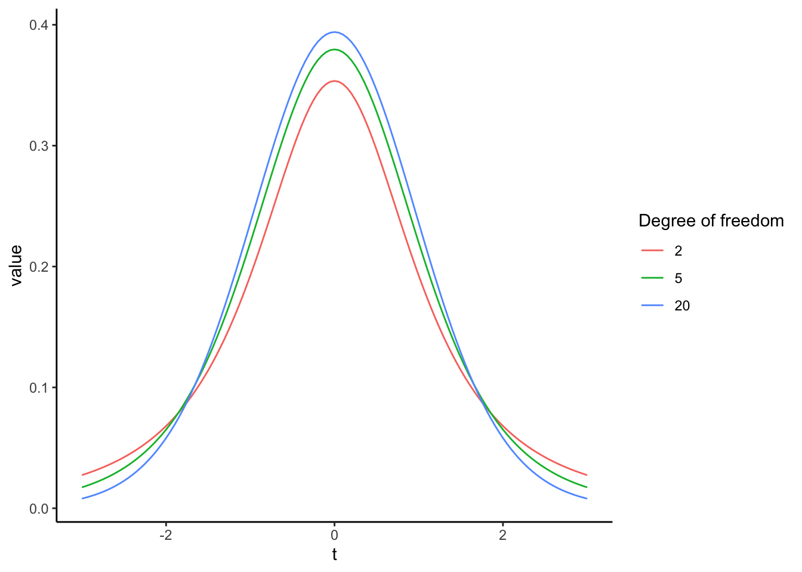
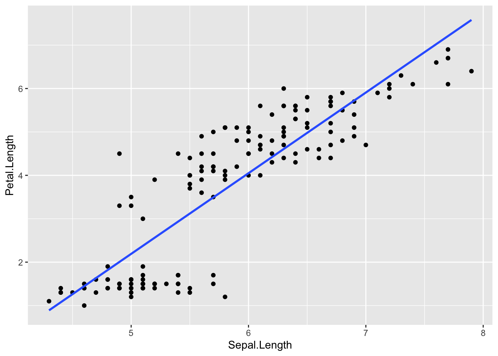
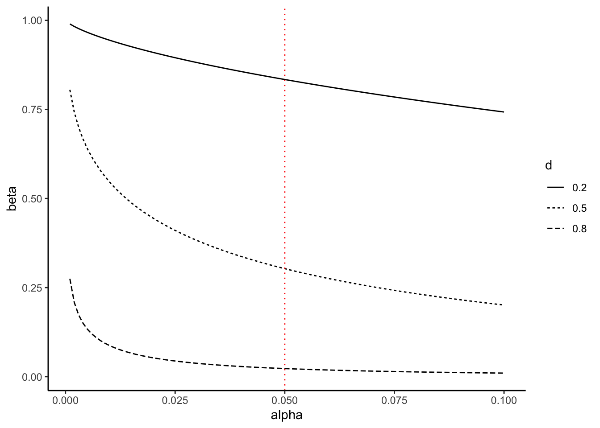
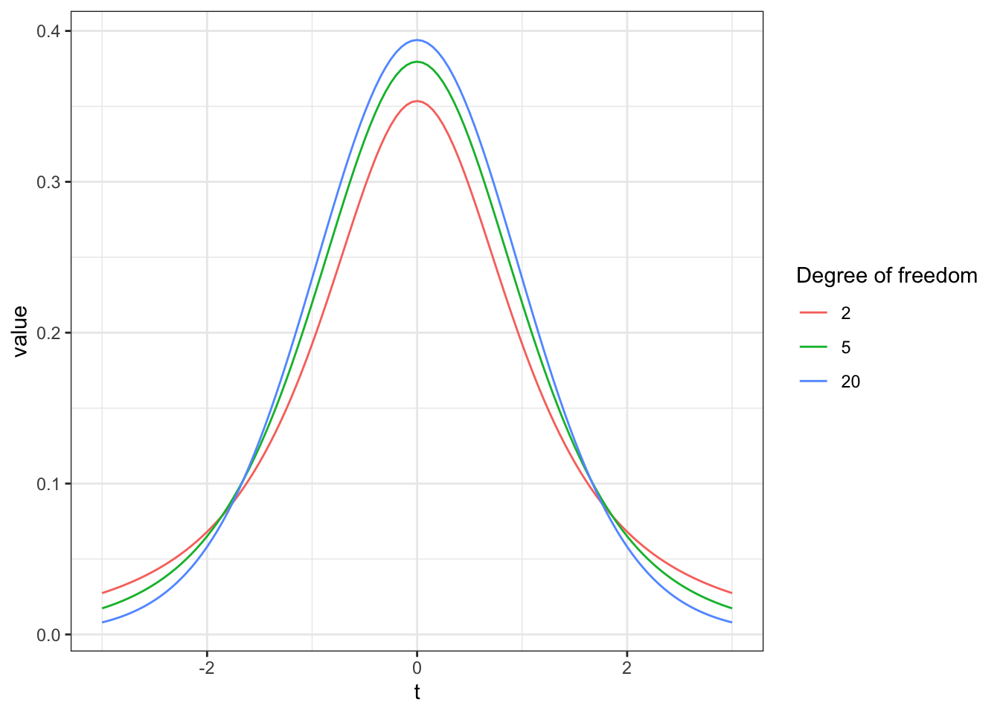
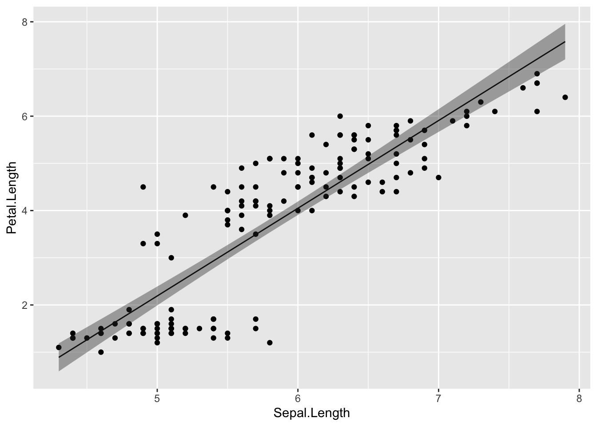
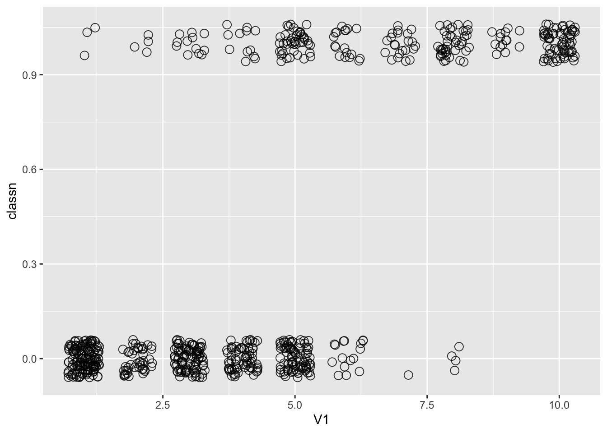

Chapter 7 統計的仮説検定
統計的仮説検定の考え方とそれが抱える問題について理解する。
- 統計的仮説検定の考え方（p値とは何か？）
- 効果量、第1種の過誤、第2種の過誤、検出力
- 統計的仮説検定が抱える問題
7.2 統計的仮説検定の考え方
7.2.1 二項検定
まずは、あるカテゴリーの割合が特定の値と等しいかあるいは異なるかを検定する二項検定（binomial test）を例として、統計的仮説検定の基礎となる「帰無仮説」、「対立仮説」及び「p値」の意味について理解していく。
ここでは、コインの表と裏が出る確率に偏りがないかを検討する実験を例として見ていく。コインを10回投げて表が出た回数\(x\)をカウントしていく。理論的には、表が\(x\)回出る確率\(P(x)\)は、コインを投げる回数\(n\)と表が出る確率\(q\)をパラメータとする二項分布に従う。
\[ P(x) = {}_n\mathrm{C}_xq^{x}(1-q)^{(n-x)}\\ x \sim Binomial(n, q) \]
コインにゆがみがない、すなわち表と裏が出る確率に偏りがないならば、10回投げて表が\(x\)回出る確率は、\(n=10\), \(q=0.5\)をパラメータとする二項分布に従うはずである。図にすると以下の通りである。
plot = data.frame(x=0:10, p=dbinom(x=0:10, size=10, prob=0.5))
ggplot2::ggplot() +
ggplot2::geom_bar(data=plot, aes(x=factor(x), y=p), stat="identity") +
labs(y = "P(x)", x ="x") +
theme_classic()
では、実際にコインを10回投げてみて表が出た回数を数えてみたところ、表が2回しか出なかったとする。この結果から、「このコインにはゆがみがあって、片一方の面だけが出やすい」と言ってもよいのか？
これを検討するために、表と裏それぞれが出る確率の等しいコインを投げる場合（すなわち、\(q=0.5\)の場合）との比較を行い、今回の実験結果がどれくらいまれな事象と言えるのかを比較する。
このとき、「コインの表が出る確率は0.5である」といった仮説のことを帰無仮説(null hypothesis)といい、「コインの表が出る確率は0.5ではない」といった帰無仮説に対する仮説のことを対立仮説（alternative hypothesis）と呼ぶ。帰無仮説は\(H_{0}\)、対立仮説は\(H_{1}\)と表すこともある。つまり、この例での帰無仮説は「\(H_{0}:q=0.5\)」、対立仮説は「\(H_{1}:q \neq 0.5\)」となる。
では、今回の帰無仮説となる二項分布（2つのパラメータが、\(n=10, q=0.5\)の場合)の分布を見てみよう。理論的には、表が\(x\)回出る確率\(P(x)\)は、\(x\)それぞれについて以下のようになる。
## x p_x
## 1 0 0.0009765625
## 2 1 0.0097656250
## 3 2 0.0439453125
## 4 3 0.1171875000
## 5 4 0.2050781250
## 6 5 0.2460937500
## 7 6 0.2050781250
## 8 7 0.1171875000
## 9 8 0.0439453125
## 10 9 0.0097656250
## 11 10 0.0009765625表もしくは裏が出る回数が2回以下の場合の確率を計算すると、
## [1] 0.109375となる。つまり、もしゆがみのないコインならば、片一方の面だけが出る回数が2回以下の確率はおおよそ0.11ということになる。
この例で求めた確率0.11のように、「帰無仮説の前提のもとで、特定の結果よりもまれな結果が得られる確率」をp値と呼ぶ。
p = 0.11 は小さい確率のように思える。なので、「ゆがみのないコインならば、一方の面が2回出る確率は本来0.11である。本来だったらあまり起こり得ない実験結果が得られたので、このコインはゆがみのないコインである（\(H_{0}: q = 0.5\)）とは考えにくい。ゆえに、このコインにはゆがみがないという帰無仮説（\(H_{0}: q = 0.5\)）を棄て、ゆがみがあって片一方の面が出やすいコインであるとする対立仮説（\(H_{1}: q \neq 0.5\)）を採択する」という結論は妥当なようにも思える。
しかし、人によって0.11を小さいと評価しても良いのか、基準が分かれる。そこで、研究者の間でどこまでの数値を小さいと評価するかの基準が決まっている。この基準となる確率が、有意水準 (significance level)である。
一般的に有意水準には0.05（5%）に設定されることが多い。なぜ5％を判断基準とするのかについては、特に明確な理由はない（みんなから合意されているからという以上の理由はない）。
つまり、「帰無仮説（ゆがみのないコインを投げる）の前提のもとでは、表が出る回数が2回以下の確率は0.11 であった。これは小さい確率のように思えるが、判断基準の5％よりかは大きい。すなわち、このコインはゆがみがない（\(H_{0}:q = 0.5\)）という仮説を棄てるわけにはいかない」ことになる。
この例のように「コインが表か裏かに関わらず、一方の面だけが出やすい」という対立仮説を検討する場合の検定は、両側検定という。仮に、今回の仮説で表と裏を区別するとして「表が出にくい」つまり「表が出る回数が2回以下の確率」を対象とする場合、このような検定を片側検定という。二項分布は左右対称の分布なので、両側p値は片側p値の2倍の値である(厳密には左右対称ではないのであくまで近似値)。多くの場合、両側検定を使うのが一般的である。
Rには、二項検定を行うための関数binom.test()が用意されている。binom.test()に二項分布のパラメータ（\(n\)と\(q\)にあたる数値）と実験結果を入れると、p値を求めてくれる。上の例について、binom.test()でp値を求めてみよう。
##
## Exact binomial test
##
## data: 2 and 10
## number of successes = 2, number of trials = 10, p-value = 0.1094
## alternative hypothesis: true probability of success is not equal to 0.5
## 95 percent confidence interval:
## 0.02521073 0.55609546
## sample estimates:
## probability of success
## 0.27.2.2 二標本の検定
先ほどの例では「\(H_{0}:q=0.5\)」という帰無仮説を設定し、ある値が特定の値と等しいか異なるかを検定した。統計的仮説検定は、「2つの母集団の間である値に差があるかどうか」を検定するのに使われることも多い。 代表的な例としては、「2つの母集団の平均値の間に差があるか」を検討する二標本のt検定がある。
t検定の考え方も、基本的に同じである。2つの集団の間で平均値に差がないとする帰無仮説の理論分布（t分布）と比べて、実際に得られた差の値がどれくらい珍しいのかを検討する。
例えば、母集団Aと母集団Bの平均値をそれぞれ\(\mu_{A}\)、\(\mu_{B}\)とする。帰無仮説は「\(H_{0}:\mu_{A} - \mu_{B} = 0\)」、対立仮説は「\(H_{1}: \mu_{A} - \mu_{B} \neq 0\)」である。
2つの集団の標本平均の差が帰無仮説のもとの理論分布（t分布）と比べて珍しいかを検討する。
以下のサンプルデータを使って、平均値の差の検定をしてみよう。まず、以下のプログラムを実行する。
set.seed(1)
Value = c(rnorm(n = 10, mean = 0, sd = 1), rnorm(n = 10, mean = 1, sd = 1))
Group = c(rep("A", 10), rep("B", 10))
sample_data = data.frame(Group = Group, Value = Value)
head(sample_data)## Group Value
## 1 A -0.6264538
## 2 A 0.1836433
## 3 A -0.8356286
## 4 A 1.5952808
## 5 A 0.3295078
## 6 A -0.8204684AとBの２つの集団(Group)から、ある値（Value）を測定したとする。
まず、2つの条件別にValueの平均値や標準偏差を求める。
## A B
## 0.1322028 1.2488450## A B
## 0.780586 1.069515集団Bの方が集団Aよりも平均値が大きいよう見えるが、そう結論づけて良いのか。これをt検定で検討しよう。
まず、2つの集団間の平均値の差を元に、以下の式から「t値」を求める。
\[ t = \frac{\bar{x_{A}} - \bar{x_{B}}}{\sqrt{s^2_{A}/n_{A}+s^2_{B}/n_{B}))}} \]
\(\bar{x_{A}}\)と\(\bar{x_{B}}\)はそれぞれ集団Aと集団Bの平均値、\(s^2_{A}\)と\(s^2_{B}\)はそれぞれ集団AとBの分散、\(n_{A}\)と\(n_{B}\)はそれぞれ集団AとBのサンプルサイズ（標本数）である。
AとBが同じ正規分布\(Normal(\mu, \sigma^2)\)から抽出される場合、t値は自由度\(n_{A}+n_{B}-2\)のt分布に従う。
t分布は、自由度によって分布が変化する（サンプルサイズの大小に応じて理論分布を調整することができる）。
x = seq(-3, 3, 0.05)
y_t2 = dt(x = x, df = 2) #自由度2のt分布
y_t5 = dt(x = x, df = 5) #自由度5のt分布
y_t20 = dt(x = x, df = 20) #自由度20のt分布
dat_t2 = data.frame(df = 2,x = x, y = y_t2)
dat_t5 = data.frame(df = 5,x = x, y = y_t5)
dat_t20 = data.frame(df = 20,x = x, y = y_t20)
dat_t = rbind(dat_t2, dat_t5, dat_t20)
p = ggplot2::ggplot() +
ggplot2::geom_line(data = dat_t, aes(x = x, y = y, color = factor(df))) +
ggplot2::labs(x = "t", y = "value", color = "Degree of freedom") +
ggplot2::theme_classic()
p
標本から得た差のt値が理論分布のどこに位置するかを検討する。
Rに入っているt.test()関数を使うことで、２つの集団の間の平均値の差の検定を行える。
##
## Welch Two Sample t-test
##
## data: Value by Group
## t = -2.6669, df = 16.469, p-value = 0.01658
## alternative hypothesis: true difference in means between group A and group B is not equal to 0
## 95 percent confidence interval:
## -2.0022169 -0.2310675
## sample estimates:
## mean in group A mean in group B
## 0.1322028 1.2488450p値は0.02であった。これは5%よりも小さいので、今回の結果が生じる確率はまれであり、AとBの母集団の平均値の間に差はないとする帰無仮説（\(H_{0}:\mu_{A}-\mu_{B}=0\)）を棄却し、AとBの母集団の平均値は異なる（\(H_{1}:\mu_{A}-\mu_{B}\neq0\)）という対立仮説を採用することとなる。対立仮説が採択されたことで母集団AとBの平均値の間には大きな差があることが示され、このような結果は「有意差(statistically significant difference)がある」と表現されることが多い。
t検定には、2つの標本の母集団の分散が等しいと仮定するかしないかで二種類の検定がある。母集団の分散が等しいと仮定しない場合の検定はウェルチの検定(Welch’s t-test)と呼ばれ、Rのt.test()関数でデフォルトで出る検定結果はこのウェルチの検定による結果である。一般的に2つの標本の母分散は不明であるので、それらが等しいかどうかも不明である。なので、等分散を仮定しないt検定をしておくほうが保守的である。
7.3 統計的仮説検定のまとめ
まとめると、
「差がない（あるいは偏りがない）」とする帰無仮説と「差がある（あるいは偏りがある）」とする対立仮説を立てる。
帰無仮説を前提とする理論分布のもとで、今回の結果よりも珍しい結果が生じる確率（p値）を求め、
その確率（p値）が有意水準よりも小さいかを評価し、
p値が有意水準よりも小さい場合は、帰無仮説を棄却して対立仮説を採択し、
p値が有意水準以上の場合は、帰無仮説を棄却しない
というのが、統計的仮説検定のプロセスである。
p値が有意水準以上の場合、「帰無仮説を支持する、帰無仮説が正しいと結論づける」のではなく、「帰無仮説を棄却しない」という表現であることに注意。
統計的仮説検定では、背理法と同様の考え方が取られている。
帰無仮説が棄却されるか（帰無仮説が正しくなく、対立仮説が正しいか）を検討したい。
「帰無仮説が正しい」という前提のもとで今回の結果が得られるかを検討する。
「帰無仮説が正しい」という前提では矛盾が生じる（帰無仮説の前提のもとでは今回の結果はほとんど生じ得ない）。
「帰無仮説は正しい」を棄却し、「対立仮説が正しい」という結論を導く。
しかし、3)の段階で矛盾が生じなかったとしても、「帰無仮説が正しい」ことを積極的に示すことにはならない。統計的仮説検定では「帰無仮説が棄却できるか」を検討しているのであって、棄却されないからといって帰無仮説を正しいという結論を導くことはできない。p値が有意水準以上だった場合には、「帰無仮説が正しいか誤っているかの結論は今回の検定の結果からは出せないので、判断を保留する」という結論になる。
また、後述の第1種の過誤の説明にもあるように、p値が有意水準未満であっても、必ずしも「対立仮説が正しい」とも限らない。
7.4 p値とサンプルサイズの関係
p値はサンプルサイズ（標本数）に依存する。サンプルサイズが多くなるほどp値は小さくなる。
例えば、平均0, 標準偏差1の正規分布に従う母集団Aと平均0.1, 標準偏差1の正規分布に従う母集団Bからそれぞれ標本を抽出し、AとBの間で平均値に差があるかを検討する。帰無仮説\(H_{0}:\mu_{A} - \mu_{B} = 0\)が棄却されるかをt検定で検定する。
実際の母集団の平均値の差は\(|0-0.1|=0.1\)である。
2つの集団はほとんど重なりあっていて、違いがなさそうに見える。
まずは、それぞれのグループで10個ずつ標本を抽出する。
set.seed(1)
N = 10
g_A = rnorm(n = N, mean = 0, sd = 1)
g_B = rnorm(n = N, mean = 0.1, sd = 1)
d = data.frame(group = c(rep("A", N), rep("B", N)), value = c(g_A, g_B))
t.test(data = d, value ~ group)##
## Welch Two Sample t-test
##
## data: value by group
## t = -0.5174, df = 16.469, p-value = 0.6118
## alternative hypothesis: true difference in means between group A and group B is not equal to 0
## 95 percent confidence interval:
## -1.1022169 0.6689325
## sample estimates:
## mean in group A mean in group B
## 0.1322028 0.3488450p値は0.05よりも大きい。5%未満かどうかで有意な差があると判断するのならば、10人ずつ標本を抽出したこの結果からは、帰無仮説\(H_{0}:\mu_{A} - \mu_{B}=0\)を棄却することはできない。
次に、各グループそれぞれ1,000個標本を抽出して、t検定をしてみる。
set.seed(1)
N = 1000
g_A = rnorm(n = N, mean = 0, sd = 1)
g_B = rnorm(n = N, mean = 0.1, sd = 1)
d = data.frame(group = c(rep("A", N), rep("B", N)), value = c(g_A, g_B))
t.test(data = d, value ~ group)##
## Welch Two Sample t-test
##
## data: value by group
## t = -2.0559, df = 1998, p-value = 0.03992
## alternative hypothesis: true difference in means between group A and group B is not equal to 0
## 95 percent confidence interval:
## -0.186376337 -0.004396124
## sample estimates:
## mean in group A mean in group B
## -0.01164814 0.08373809今度は、p値が0.05よりも小さい。1,000人ずつ標本を抽出したこの結果からは、帰無仮説\(H_{0}:\mu_{A} - \mu_{B}=0\)は棄却され、AとBとの間に平均値に有意な差があるという結論が導かれることになる。しかし、実際にはAとBの間の差は0.1しかない。
このように、p値はサンプルサイズが大きくなるほど小さくなるという性質がある。実質的にあまり意味のない大きさの差でも、サンプルを多く取れば「有意な差がある」と結論が出てしまう可能性がある。
異なるグループから標本を抽出したのならば、平均値に差が存在しないということはありえない。どんなに小さくても、差は存在する(差の大きさが0.00001でも)。小さい標本では、わずかな差は誤差として評価されて「有意差がある」という結論は導かれにくい。しかし、サンプルサイズを大きくすることで差を検出しやすくなる。
p値が示しているのは差の大きさ（効果の大きさ）ではないということに、注意が必要である。
7.5 効果量
効果の大きさそのものを表す指標として、効果量（effect size）というものがある。
例えば、2グループ間の差を表す効果量としてCohenのd (Cohen’s d)という指標がある。Cohenの dは，以下の式で計算される。\(n\)はそれぞれのグループ（ここでは、AもしくはB）のサンプルサイズ、\(\bar{x}\)はそれぞれのグループの標本平均，\(s_{A}^2\)と\(s_{B}^2\)はそれぞれ2群の不偏分散とする。\(s\)は2群を合成した上での標準偏差を意味する。
\[ d = \frac{|\bar{x_{A}} - \bar{x_{B}|}}{s} \\ s = \sqrt{\frac{(n_{A}-1)s_{A}^2 + (n_{B}-1)s_{B}^2}{n_{A}+n_{B}}} \]
つまり、Cohenのdは２つのグループの平均値の差を標準偏差で調整したものである。一般的に、\(d=0.2\)は小さい効果、\(d=0.5\)が中程度の効果、\(d=0.8\)が大きい効果として理解されている。このように、指標によって効果の大きさの基準が決まっている。
他にも、効果量には様々な種類がある。相関係数も係数の値が２変数間の関連の大きさを表すので、効果量の仲間である。
7.6 第1種の過誤と第2種の過誤
例えば、２つの集団AとBの間で平均値に差があるかどうかを検定する。帰無仮説\(H_{0}\)（母集団AとBの平均は等しい）と対立仮説\(H_{1}\)（母集団AとBの平均の間に差がある）を以下のように表す。
\[ H_{0}: \mu_{A} - \mu_{B}=0\\ H_{1}: \mu_{A} - \mu_{B}\neq0\\ \]
「帰無仮説が真なのに、帰無仮説を棄却してしまう（本当は差がないのに、“差がある”と判断してしまう）」の誤りのことを、第1種の過誤（type Ⅰ error）と呼ぶ。
これに対し、「帰無仮説が偽なのに、帰無仮説を棄却しない（本当は差があるのに、“差がない”と判断してしまう）」誤りのことを、第2種の過誤（type Ⅱ error）と呼ぶ。
第1種の過誤を犯す確率\(\alpha\)は、要は有意水準として設定した値そのものである（\(\alpha=0.05\)）。有意水準を高くする、すなわち「差があると判断する基準をゆるく」してしまうとより帰無仮説を棄却しやすくなってしまう。それは同時に、「帰無仮説を誤って棄却してしまう」可能性を高めてしまう。
第2種の過誤を犯す確率は、\(\beta\)と表現される。
それぞれの関係をまとめると、以下のように表現できる。

例えば、以下に帰無仮説と対立仮説との関係のイメージを図で示している。２つの集団の母集団の平均値の差の効果量を\(d\)とし、帰無仮説\(H_{0}: d = 0\)と対立仮説\(H_{1}: d > 0\)とした場合の分布を示している（単純化のため片側検定とする）。

差\(d\)が赤い部分に当てはまるときは、帰無仮説を棄却することとなる。同時に、赤い部分は第1種の過誤を犯す確率\(\alpha\)を意味する。逆に、差\(d\)が青い部分に含まれるときは、対立仮説の分布にも含まれているにも関わらず帰無仮説を棄却しないことを意味する。すなわち、青い部分が第２種の過誤を犯す確率\(\beta\)を意味する。
第1種の過誤と第2種の過誤はトレード・オフの関係にある。第1種の過誤を避けようとして有意水準を小さくすれば帰無仮説の棄却が厳しくなり、逆に第2種のエラーを犯してしまう確率も高くなる（帰無仮説が偽であるにもかかわらず、棄却しない）。
例えば、以下の左図が\(\alpha = 0.05\)のとき、右図が\(\alpha = 0.01\)の場合である。右図は左図と比べて赤い部分（\(\alpha\)）が小さくなった一方、青い部分（\(\beta\)）が大きくなっているのがわかる。

以下の図は、第1種の過誤\(\alpha\)（有意水準）と第2種の過誤\(\beta\)との関係を示したものである。\(d\)は2グループ間の差の効果量を意味する。それぞれのグループのサンプルサイズは50としている（縦の赤い点線が\(\alpha = 0.05\)の場合）。\(\alpha\)と\(\beta\)は一方が増えれば、もう一方が減る関係にあることがわかる。

7.7 検出力
帰無仮説が偽（対立仮説が正しい）のときに帰無仮説を棄却するのが、正しい判断である。さきほどの表でも示しているように、このときの確率は\(1 - \beta\)で表すことができる。この\(1 - \beta\)は検出力(power)と呼ばれる。以下の図でいうと、対立仮説の分布全体から、青い部分（\(\beta\)）を差し引いたところが検出力を示している。

検出力とは、「実際に差があるときに、“差がある”と正しく判断できる確率」である。統計的仮説検定では、この検出力をいかに高くするかが重要となる。
7.7.1 検出力の高さに影響する要因
検出力は、サンプルサイズが大きいほど、または効果量が大きいほど上昇する。
以下の図は、サンプルサイズを変えたときの検出力の変化を示したものである。右図は、左図よりも2つの集団A, Bそれぞれのサンプルサイズを大きくした場合である。サンプルサイズを大きくすると分布が狭くなる（標準誤差が小さくなる）ので、差を検出しやすくなる。

以下の図は、効果量を変えたときの検出力の変化を示したものである。右図は、左図よりも母集団AとBとの差（効果量）が大きい場合である。効果量が大きいほど、統計的仮説検定で有意な差を検出しやすくなる。

以下の図は、サンプルサイズ、効果量及び検出力の関係をまとめた図である。有意水準\(\alpha = 0.05\)としている（横の赤い点線が、一般的に必要とされる検出力\(\beta = 0.80\)である）。サンプルサイズが増えるほど検出力は上昇し、効果量が大きいほど検出力も上昇する。

7.8 検出力分析
これまで見てきたように、サンプルサイズ、p値、検出力、効果量はそれぞれ関わり合っている。
サンプルサイズが増えれば、p値は小さくなる。
サンプルサイズが増えれば、検出力は上昇する。
効果量が大きければ、検出力は上昇する。
事前に効果量、有意水準、検出力を決めておけば、有意な差を検出するために最低限必要なサンプルサイズを求めることができる。このようなサンプルサイズの設計方法は、事前の検出力分析（prior power analysis）という。
＊効果量は事前に知ることはできないが（研究によって調べたいことそのものなので）、先行研究からこれくらいだろうという予想あるいはこのくらいの大きさを検出したいという期待によって決める。
また、データの取得後に、取ったサンプルサイズ、明らかになった効果量及び有意水準から、検出力を求めることができる。これを、事後の検出力分析（post-hoc power analysis）という。
pwrパッケージに、検出力分析をするための関数がいくつか用意されている。
library(pwr)
#事前の検出力分析（サンプルサイズの設計）
#2群間の差をt検定で検定する場合
#各群のサンプルサイズ(n)，効果量（d: Cohen's d），有意水準（sig.level），検出力（power）のどれか３つを入れると，入れなかったものの結果が出力される。
pwr::pwr.t.test(d = 0.5, power = 0.8, sig.level = 0.05, n = NULL)##
## Two-sample t test power calculation
##
## n = 63.76561
## d = 0.5
## sig.level = 0.05
## power = 0.8
## alternative = two.sided
##
## NOTE: n is number in *each* group#事後の検出力分析
#２群それぞれのサンプルサイズ(n1, n2)，効果量(d), 有意水準(sig.level)を入れると，検出力が求められる。
pwr::pwr.t2n.test(n1 = 40, n2 = 40, d = 0.8, sig.level = 0.05, power = NULL)##
## t test power calculation
##
## n1 = 40
## n2 = 40
## d = 0.8
## sig.level = 0.05
## power = 0.9421818
## alternative = two.sided7.9 統計的仮説検定が抱える問題
7.9.1 第1種の過誤
今度は、同じ平均0、標準偏差1の正規分布に従う母集団AとBから20個ずつ標本を抽出しグループAとBの間で平均値に差があるかをt検定で検定する。帰無仮説は\(H_{0}:\mu_{A} = \mu_{B}\)である。
すなわち、帰無仮説が正しい前提のもとで抽出された標本について、正しい結論（帰無仮説を棄却しない）を統計的仮説検定によって導くことができるかを検討する。有意水準は、5%（0.05）とする。
set.seed(1)
N = 20
g_A = rnorm(n = N, mean = 0, sd = 1)
g_B = rnorm(n = N, mean = 0, sd = 1)
d = data.frame(group = c(rep("A", N), rep("B", N)), value = c(g_A, g_B))
t.test(data = d, value ~ group)##
## Welch Two Sample t-test
##
## data: value by group
## t = 0.69794, df = 37.917, p-value = 0.4895
## alternative hypothesis: true difference in means between group A and group B is not equal to 0
## 95 percent confidence interval:
## -0.3744327 0.7684235
## sample estimates:
## mean in group A mean in group B
## 0.190523876 -0.006471519\(p \geq .05\)であり、帰無仮説は棄却されない。
では、グループA・Bそれぞれ20個ずつ標本を抽出して平均値の差があるかをt検定で検定することを100回やってみる。以下が、そのシミュレーションのプログラムである。
set.seed(1)
d_sim = data.frame()
for(s in 1:100){
N = 20
g_A = rnorm(n = N, mean = 0, sd = 1)
g_B = rnorm(n = N, mean = 0, sd = 1)
d = data.frame(group = c(rep("A", N), rep("B", N)), value = c(g_A, g_B))
result = t.test(data = d, value ~ group)
p = result$p.value
temp = data.frame(s = s, p = p)
d_sim = rbind(d_sim, temp)
}\(p<.05\)となった結果をカウントする。
##
## insignificant significant
## 94 6実際には帰無仮説が正しい（母集団の間で差がない）にも関わらず、標本抽出してt検定をするのを100回行うと、\(p<.05\)となって帰無仮説を誤って棄却する結果が100回中6回確認された。以下の図は、100回のシミュレーションごとにp値をプロットしたものである。赤い点線が\(p=0.05\)を示している。点線以下の点が、帰無仮説を棄却した結果である。
ggplot2::ggplot() +
ggplot2::geom_point(data = d_sim, aes(x = s, y = p)) +
ggplot2::geom_hline(yintercept = 0.05, linetype = "dotted", color= "red") +
ggplot2::labs(x = "Simulation", y = "p") +
theme_classic()
有意水準を5%に設定することはすなわち、全ての検定のうちの5%（100回中5回）については誤って帰無仮説を棄却してしまうことを許してしまうのである（有意水準が、第1種の過誤の確率そのものであることの理由）。有意水準は慣例的に0.05と設定されているが、上記のシミュレーションのようにたまたま有意な結果が得られて間違った結論を導いてしまう恐れが存在する。
これを利用して、本当は差がないにもかかわらず「有意な差がある結果」を導くこともできる。pハッキング(p-hacking)とも表現される。
たくさん実験を行って，有意な差が出た結果だけを報告する。
たくさんの質問項目について個別に検定を行い、有意な結果だけについて議論する。
参加者を少しずつ追加して、追加した度に検定を行い、有意差が出たら追加するのをやめる。
7.9.2 多重比較の問題
統計的仮説検定を繰り返すほど、差がなくても差があると評価してしまう確率（第1種の過誤を犯す確率）は増える。 検定をn回行ったときに、「1回でも帰無仮説を誤って棄却してしまう確率」は以下の式で表すことができる（1から全て正しく帰無仮説を棄却しなかった確率を引く）。
\[ p(\text{Type 1 Error}) = 1 - (1 -\alpha)^n \]
例えば、5%水準で10回検定を行えば、少なくとも1回は帰無仮説を誤って棄却してしまう確率が0.4 になる。
## [1] 0.4012631このように複数回検定を行うことを多重比較という。多重比較を行うと、第1種の過誤を犯す確率が上昇する。以下は、検定の回数と「少なくとも1回は第1種の過誤を犯してしまう確率」との関係を有意水準\(\alpha\)別に示したものである。
図からも、有意水準を厳しく設定すれば、第1種の過誤を回避することができる。そこで、分散分析で3つ以上の条件間で平均値を比較するときなどのように検定を複数行う場合には、有意水準を通常よりも厳し目に調整する多重比較の補正がなされる。詳しくは、8章で触れる。
alpha = 0.05
x = 1:20
m_c = function(x = 1:20, alpha = 0.05){
p = 1 - (1 - alpha)^x
return(p)
}
d = rbind(
data.frame(x = 1:20, p = m_c(alpha = 0.001), alpha = 0.001),
data.frame(x = 1:20, p = m_c(alpha = 0.01), alpha = 0.01),
data.frame(x = 1:20, p = m_c(alpha = 0.05), alpha = 0.05)
)
p = ggplot() +
geom_line(data = d, aes(x = x, y = p, linetype = factor(alpha), color = factor(alpha))) +
labs(x = "number of comparisons", y = "Type 1 error", linetype = "alpha", color = "alpha") +
theme_classic()
p
確認問題
問１
以下のプログラムを読み込む。
ある教授法に児童の学力向上の効果があるかを検討した。学校Bにはその教授法を実施し、学校Aには何もしなかった。その後、学校Aと学校Bそれぞれ10人の生徒に学力テストを行った。A、Bそれぞれが学校A、Bそれぞれの生徒の成績である（架空のデータである）。
A = c(38, 53, 61, 27, 54, 55, 44, 45, 44, 41)
B = c(48, 40, 43, 56, 69, 53, 47, 41, 42, 91)
Value = c(A, B)
Treatment = c(rep("A", 10), rep("B", 10))
sample = data.frame(Treatment = Treatment, Value = Value)
str(sample)## 'data.frame': 20 obs. of 2 variables:
## $ Treatment: chr "A" "A" "A" "A" ...
## $ Value : num 38 53 61 27 54 55 44 45 44 41 ...学校Aと学校Bそれぞれについて、テストの得点の平均値及び標準偏差を求めて報告せよ。
この教授法に成績向上があったかどうかについてt検定（等分散を仮定しない）で検討し、結果について報告するとともに結論を述べよ。
※t.test()関数を使う。等分散を仮定しない検定の場合は、特にオプションをしていしないでもよい。